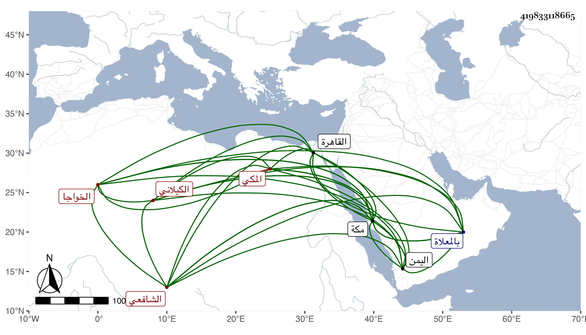

0902Sakhawi.DawLamic.ITO20230111-ara1.EIS1600.419833118665
Biography ID: 419833118665
525
محمد بن علي بن عمر الخواجا بير محمد الكيلاني ثم المكي الشافعي . قدم مكة في سنة ثمان وثمانمائة وهو ابن ثلاث عشرة سنة فحفظ بها القرآن وصلى به التراويح في المسجد الحرام والمنهاج الفرعي وعرضه على الجمال بن ظهيرة وغيره وتلا بالسبع على الزين بن عياش وحضر بعض الدروس بل سمع في سنة أربع عشرة على الزين المراغي النصف من مسلم وسنة ست عشرة ثلاثيات أحمد على الشمس محمد بن محمد بن أحمد بن المحب المقدسي ، وسافر إلى بلاد اليمن والقاهرة وغيرها مرارا للتجارة فأثرى وكثر ماله وابتنى بمكة دورا ، وكان عارفا بأمور دنياه متقنا لها حافظا لكتاب الله كثير التلاوة مع ظرف وحشمة في الجملة اجتمعت به مرارا في القدمة الأولى لمكة . ومات بها في ثالث عشري المحرم سنة ستين وصلي عليه بعد صلاة الصبح عند باب الكعبة ودفن بالمعلاة وخلف تركة هائلة من النقد والعروض والعقار ولم يترك ذكرا بل ست بنات سامحه الله وإيانا .
